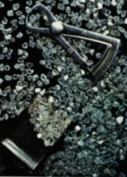

|
|
|
|
|
|
|
|
|
|
Un nouveau parti du site est ce que nous appelons "le voyage virtuel." Chaque mois nous choisissons un pays différent de l'Europe et créons une petite présentation pour votre information. Nous espérons que vous allez profiter de cette information et que vous allez la trouver intéressante.
|
|
|
|
|
|
|
|
|
|
|
|
Avant de partir
|
- Vestimentaires: En été, apportez des vêtements comfortables et légers et pour les soirs, un chandail ou une veste. En hiver, apportez des vêtements chauds, un imperméable et un parapluie.
- Vaccins: Il n'y a pas de vaccins obligatoires.
- Passeport: Oui, c'est nécessaire.
- Visa: Pas requis pour des visites qui durent moins que 90 jours.
- Voltage-Cycles: 220 - 50 (convertisseur est très utile)
- Animaux: Un certificat vétérinaire attestant la vaccination contre la rage et santé générale écrit entre 30 jours et 1 an avant l'entrée.
- Allocation hors taxe: La liste suivante s'applique aux citoyen(ne)s canadien(ne)s et américain(e)s:
- 200 cigarettes/50 cigares/250 grammes de tabac
- 1 litre d'alcool avec une concentration plus que 22% (whisky, cognac, gin, etc.) ou 2 litres avec une concentration moins que 22% (champagne, sherry, etc.)
- 2 litres de vin (non-pétillant)
- 250 ml eau de toilette/eau de parfum/lotion après-rasage
- 50 grammes de parfum
- 1 caméra avec 12 films
- 1 caméra vidéo avec 6 films
- 1 radio portative
- 1 machine à écrire portative
Vous pouvez acheter d'autres produits hors taxes jusqu'à la limite de 380 BEF (environ $100.00 américains) par voyageur(euse) par voyage. Si vous dépassez cette limite, il faut payer les taxes.
- Langue: La Belgique a deux langues officielles: le français et le néerlandais. Cependant, l'anglais est compris par la plupart du pays. L'allemande est aussi parlé par un petit pourcentage de la population belge.
|
| |
Pendant
le voyage
|
- Argent: L'unité monétaire de la Belgique est le franc belge (BEF). Il y a des pièces qui valent 1, 5, 20 et 50 BEF et des notes avec valeurs de 100, 200, 500, 1 000, 2 000 et 10 000 BEF. Un dollar canadien égale approximativement 26 BEF. Toutes cartes de crédit majeures sont accepté (Visa, Master Card, etc.). Il n'y a pas de limite sur le montant d'argent étranger qui peut être amener dans le pays. Entrez un montant de dollars ci-dessous et poussez le bouton pour voir la valeur exacte en francs belges.
- Limites d'age: Boire d'alcool - 18; faire le jeu - 21.
- Conduite: À droite. Les maximums de vitesse sont 50 km/h (31 mph) en villes, 90 km/h (56 mph) hors des villes et 120 km/h (75 mph) sur les autoroutes à 4 voies. Les enfants de moins que 12 ans ont besoin de rester en arrière des voitures. Le maximum concentration de sang/alcool permis est 0.5 g/l.
- Fuseau horaire: Le fuseau horaire de la Belgique est GMT (Greenwich Mean Time). Ceci est 6 hours devant EST (Eastern Standard Time) et 9 hours devant PST (Pacific Standard Time).
- Langue: Voici une liste des mots et phrases communément utilisés aux différentes langues:
| Anglais |
Français |
Néerlandais |
| good morning |
bonjour |
goedemorgen |
| excuse me |
excusez-moi |
sorry |
| good afternoon |
bonne après-midi |
goedemiddag |
| yes |
oui |
ja |
| good evening |
bonsoir |
goeden avond |
| no |
non |
neen |
| good bye |
au revoir |
tot ziens |
| please |
s'il vous plaît |
alstublieft |
| where is ... ? |
où est ... ? |
waar is... ? |
| thank you |
merci |
dank u wel |
| how much? |
combien? |
hoeveel? |
| my name is ... |
je m'appelle ... |
mijn naam is ... |
- Nourriture: Le poisson est très commun en Belgique. Anguille, coque et moules sont tout considerés des délicatesses. Deux spécials là sont carbonades, le boeuf cuit en ragoût dans la bière, et waterzooi, une soupe à poisson et poulet.
- Indicatifs: L'indicatif de pays pour la Belgique est 32. Voici une carte des indicatifs de la Belgique:
|
|
|
|
|
Capitale:
|
Bruxelles
|
Superficie: |
30 519 km2
|
|
Population:
|
10 000 000
|
Densité:
|
327 persons par km2
(847 par sq. mi)
|
|
Distribution:
|
97% urbain
3% rural
|
Élévations:
|
Haut-le mont Botrange
694 m (2 277 pieds)
Bas-niveau de mer
|
|
Produits:
|
Agriculturel-bétail, betteraves à sucre, blé, houblons, lin, lait, orges et pommes de terre.
Fabrication-acier, articles en cuire, chimiques et produits chimiques, ciment, papier, préparation d'aliments, textiles et verre.
|
|
Chef de l'État:
|
le Roi Albert II
|
Drapeau:
|
*
|
|
Blason:
|
*
L'union fait la force
|
Hymne
National:
|
"La Brabançonne"
O Belgique, ô mère chérie,
A toi nos coeurs, à toi nos bras,
A toi notre sang, ô Patrie!
Nous le jurons tous, tu vivras!
Tu vivras toujours grande et belle
Et ton invincible unité
Aura pour devise immortelle: (bis)
Le Roi, la Loi, la Liberté!
Le Roi, la Loi, la Liberté! (bis)
|
|
Description:
|
La Belgique est un petit pays en Europe du nord-ouest très peuplé. Situé entre l'Allemagne, la France et les Pays-Bas, et separé du Royaume-Uni par une mince bande de la Mer Nord, la Belgique est devenu un centre de commerce et industrie important. Malheureusement, son emplacement l'a immersé dans plusieurs conflits, les Guerres Mondiales en particulier. Quand-même, la qualité de vie des belges est souvent appelé "la plus haute au monde." Le pays a battu des records mondials pour la production et l'absence de pauverté. La Belgique n'a pas des gros montagnes ni des lacs naturels. Plusieurs rivières, comme la Schelde, Sambre et Meuse, sont utilisés pour des routes de transportation.
|
|
Climat:
|
Le climat belge est plutôt modéré. Les étés sont frais; les hivers, doux. La température moyenne à Bruxelles en hiver est 2°C et en été c'est 18°C. Les vents sont normalement de l'ouest. La Belgique est très pluvieuse, avec une moyenne de précipation annuelle entre 71 - 100 cm (28 pousses).
|
|
Villes:
|
97% de la population belge vit en villes. Voici une liste de quelques villes majeurs en Belgique et leurs noms en différents langues:
| Anglais |
Français |
Néerlandais |
| Antwerp |
Anvers |
Antwerpen |
| Arlon |
Arlon |
Aarlen |
| Bastogne |
Bastogne |
Bastenaken |
| Bruges |
Bruges |
Brugge |
| Brussels |
Bruxelles |
Brussel |
| Ghent |
Gand |
Gent |
| Kortrijk |
Courtrai |
Kortrijk |
| Leuven |
Louvain |
Leuven |
| Liege |
Liege |
Luik |
| Mechelen |
Malines |
Mechelen |
| Mons |
Mons |
Bergen |
| Namur |
Namur |
Namen |
| Soignies |
Soignies |
Zinnik |
| Tongeren |
Tongres |
Tongeren |
| Tournai |
Tournai |
Doornik |
| Yeper |
Ypres |
Ieper |
*
Anvers, une des plus grandes villes en Belgique
|
*
Un grand spectacle historique en Bruges
|
*
La Grande Place en Bruxelles, la capitale
|
|
|
|
|
Introduction:
|
La majorité de peuple belge appartient à un des deux groupes ethniques présent en Belgique, les Flamands et les Wallons. Les Flamands composent environ 55% de la population; les Wallons, à peu près 30%. Les Flamands parlent néerlandais et habitent en Belgique du nord-ouest, qui est appelé les Flandres. Contrairement, les Wallons, qui parlent français, occupent le parti sud de la Belgique, connu comme Wallonie. Situé au milieu, Bruxelles est une combinaison de ces deux cultures.
|
|
Famille:
|
Les familles belges sont véritablement proches. Elles passent beaucoup de temps ensemble faisant une diversité d'activités.
|
|
Religion:
|
Approximativement 90% de la population appartient à l'église catholique, mais moins qu'un demi d'eux vont à l'église régulièrement. Seulement une personne de chaque cent est protestante. Huit pourcent n'affirme pas une religion. Elle paraît plus importante aux Flamands qui envoient leurs enfants aux écoles catholiques et participent activement dans des événements relié à l'église.
|
|
Loisirs:
|
Le soccer et des courses de vélo sont les sports de spectateurs les plus populaires en Belgique. Beaucoup de gens qui vivent aux partis rurales du pays font de la pêche, la chasse, du camping et des courses de pigeon.
|
| |
**
Un colombophile, participant aux courses de pigeon
|
|
|
|
| |
Pour un pays si petit, la Belgique offre un diversité d'activités énorme.
|
| |
|
Casinos:
|
Les villes suivantes ont des casinos:- Blankenburg
- Chaudfontaine
- Dinant
- Knokke-Heist
- Middlekerk
- Namur
- Ostend
- Spa
|
|
Musées:
|
Des musées majeurs de la Belgique peuvent être trouvés dans les villes suivantes:
- Anvers:
- Musée Royal des Beaux-Arts, Leopold de Waelplaats 1-9
- Maison de Rubens, Wapper 9
- Salle de Corporation des Bouchers, Vleeshouwersstraat 38-40
- Musée de Mayer Van den Bergh, Lange Gasthuisstraat 19
- Maison de Rockox, Keizerstraat 10
- Bastogne:
- Centre Historique de Bastogne, Colline du Mardasson
- Bruges:
- Maison de Beguine, Begijnhof
- Musée de Groeninge, Dijver 12
- Musée de Gruuthuse, Dijver 17
- Kantcentrum (Centre de la Dentelle), Peperstraat 3
- Musée de Memling, Mariastraat 38
- Bruxelles:
- Musée d'Art Moderne, Place Royale/Koningsplein 1-2,
- Atomium & Mini-Europe, Boulevard du Centenaire/Eeuwfeest
- Musée Royal de l'Afrique Centrale,13 Leuvensesteenweg, Tervuereen
- Autoworld, Parc du Cinquantenaire/Jubelpark 11
- Centre d'Art des Bande Dessinée Belge, Rue de Sables/Zandstraat, 20
- Musée de Horta, Rue Americaine/Amerikaansestraat 25
- Musée d'Art Ancien, Rue de la Regence/Regentshapsstraat 3
- Musée de l'Institut Royal pour Sciences Naturelles de la Belgique, Rue Vautier 29
- Musée Royal de l'Histoire de l'Armée & Militaire (Section Aéronautique), Parc du Cinquantenaire/Jubelpark 3
- Musée Royal d'Art & Histoire, Parc du Cinquantenaire/Jubelpark 10
- Gand:
- Château des Comtes, Sint-Veerleplein
- Musée des Beaux-Arts, Nicolaas de Liemaeckereplein, 3
- Musée de l'Art Contemporain, Nicolaas de Liemaeckereplein, 3
- Liege:
- Musée de Curtius, Quai de Maastrivht, 13
- Musée d'Ansembourge, Féronstrée, 114
- Musée des Armes, Quai de Maastrivht, 8
- Musée de la Verre, Quai de Maastrivht, 18
- Font Baptismal, St-Barthélemy Church
- Musée de l'Art Moderne, Parc de la Boverie
- Tournai:
- Musée de la Tapisserie & Art Vestimentaire, Hotel Gorin, Place Reine Astrid, 9
- Musée des Beaux-Arts, Enclos St. Martin
- Musée de l'Histoire & Arts Décoratifs, Rue Saint-Martin, 50
- Musée de Folklore, Rue des Sions, 13
|
|
Magasinage:
|
La majorité des magasins sont ouverts lundi à samedi 10 am - 6 pm. Les taxes sont toujours incluses dans le prix. Voici quelques souvenirs belges excellents:
- dentelle
- pralines du chocolate belge
- antiques
- étain
- tapisseries
- diamants
- articles en cuire
|
| |
|
**
|
|
**
|
Diamants d'Antwerp, qui manie
40% de l'industrie mondiale
|
|
La dentelle: un art qui disparaît
|
|
|
|
|
|
Transport:
|
- Avion - Entre régions en Belqique, ce n'est pas récommandé.
- Train - La moyenne de transportation plus efficace entre villes. Un réseau épais relie toute la Belgique. Normalement, il y a un train qui départ chaque demi-heure de/à toutes villes majeures. Par exemple, un billet d'aller et retour en deuxième classe qui couvre 192 km (150 mi) coûterait environ $41 canadiens ($28 américains).
- Publique - Des autobuses, trams et taxis sont disponibles à toutes villes majeures. Les taxis coûtent à peu près 2$ canadiens ($3 américains) par kilomètre. Les taxis en Bruxelles coûtent la moitié de ce prix.
|
|
Logement:
|
- Anvers -
- Alfa De Keyser 1-800-843-3311
- Carlton 1-800-344-1212
- Hilton Antwerp 1-800-445-8667
- Bruges -
- Acacia 1-800-528-1234
- Navara 1-800-528-1234
- Sofitel 1-800-221-4542
- Bruxelles -
- Carrefour de L'Europe 1-800-448-8355
- Charlemagne 1-800-448-8355
- Sheraton Center 1-800-325-3535
- Orion 1-800-546-4777
- Holiday Inn Center 1-800-465-4329
- Gand -
- Chamade 1-800-528-1234
- Ibis Cathedral 1-800-221-4542
- Alfa Flanders 1-800-843-3311
- Liege -
- Bedford 1-800-448-8355
- Ramada 1-800-854-7854
|
|
Restaurants:
|
- Bruxelles -
- La Mirabelle, Chaussée de Boendael 459 - 1050 Brussels
- Auberge Napolean, Bouchoutlaan 1 - B 1860 Meise
- La Fiancée du Pirate, 37 Place de la Vieille Halle aux Blés - 1000 Brussels
- Anvers -
- The Bistro, Wapper 1A (Meir) - 2000 Antwerpen
- La Gondola, Suikerrui 30 - 2000 Antwerpen
- Flandres -
- Spiga d'Oro, Leuvensesteenweg 43 - 3191 Hever-Boortmeerbeek
|
|
|
|
|
|
|
|